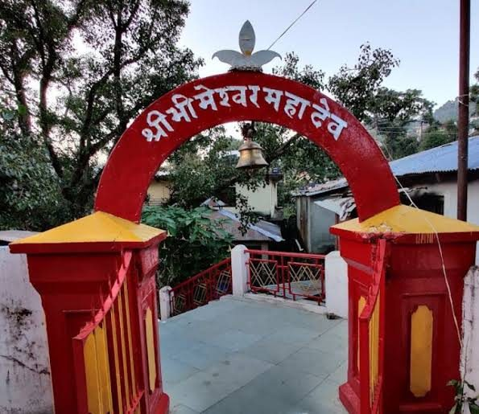
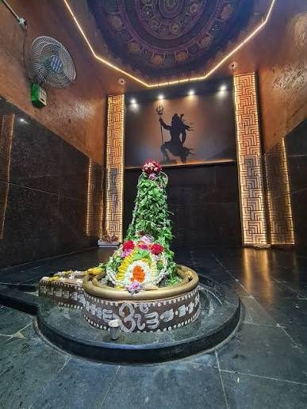
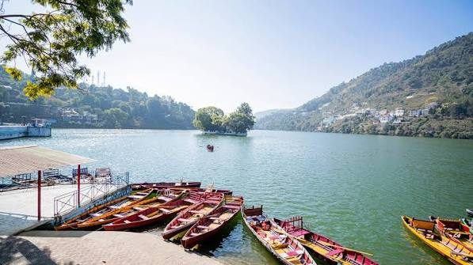
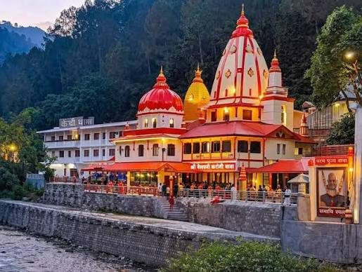
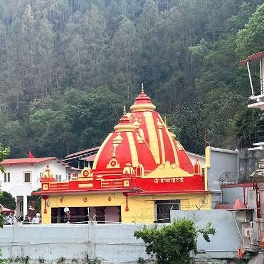
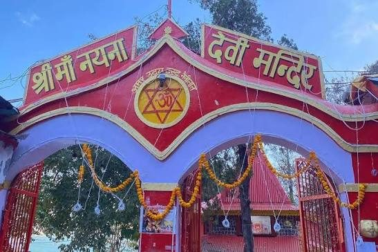
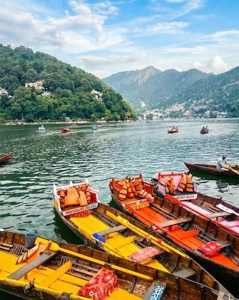
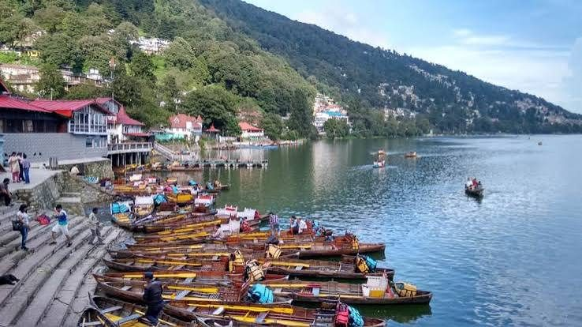

Route map
Pins sit at the real coordinates of each stop. Roads are drawn as a simple guide; use Google Maps for turn-by-turn.
- SGraphic Era Hill UniversityStart · SatTal Road, Bhimtal
- 1Bhimeshwar Mahadev & Bhimtal Lake6:00 – 9:15 AM
- 2Shree Kainchi Dham10:15 AM – 12:15 PM · 19.6 km from Bhimtal
- •Lunch at Bhowali Junction12:35 – 1:15 PM
- 3Maa Naina Devi & Naini Lake1:45 – 4:25 PM · 10.9 km from Bhowali
- 4Haldwani Railway Station6:00 PM sharp · 40.4 km descent
Day plan
1Bhimtal & Bhimeshwar
6:00 – 9:15 AM


-
Sunrise on the stone dam
Sunrise 6:19 AM. Park at Daat.
-
Darshan at Bhimeshwar Mahadev
Temple opens 6 AM. Prasad self-paid.
-
Lake & courtyard photoshoot and Boat Ride
-
Breakfast at Daat stalls
Order and pay your own.
-
Board the Traveller
2Kainchi Dham
10:15 AM – 1:15 PM

-
Darshan & Hanuman Chalisa
Phones, cameras and bags stay locked in the vehicle.
-
Photoshoot at arch bridge & viewpoint
-
Board, drive to Bhowali
-
Lunch at Bhowali Junction
Order and pay your own.
3Nainital
1:45 – 4:25 PM


-
Park at Tallital, walk Mall Road
About 15 minutes to Mallital.
-
Maa Naina Devi darshan
-
Naini Lake photoshoot
Boat jetty, red flags, temple arch.
-
Bhotia Market & Mall Road
Free time, self-paid.
-
Board the Traveller
4Haldwani Station
6:00 PM-
Group drop at Haldwani Railway Station
Via Jeolikote and Kathgodam, with a 20-minute traffic buffer.
Travel budget
₹800
per person, travel only.
Food, prasad and shopping are paid by each person.
Food, prasad and shopping are paid by each person.
| 20-seater Tempo Traveller (12 hrs) | ₹10,500 |
| Driver allowance | ₹500 |
| Tolls and parking | ₹1,000 |
| Contingency | ₹600 – 2,000 |
| Pooled total (17–20 people) | ₹12,000 – 14,000 |
Good to know
- Be on the Traveller by 9:15 AM and 4:25 PM. These keep the 6 PM drop on time.
- Book an Uttarakhand-registered vehicle to avoid extra permit charges.
- The Traveller parks at Tallital in Nainital; the group walks along Mall Road.
- Keep luggage locked in the vehicle so everyone is hands-free.